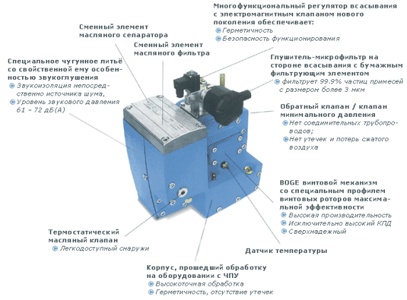

Модульная конструкция с просторным размещением стандартных узлов в трех отдельных секциях
|
|
|
|---|
Компрессор винтовой воздушный маслосмазываемый BOGE C 30 в шумопоглощающем корпусе
скачать
брошюру>>
Производительность: 3,62 м3/мин
Давление: 8 атм
Мощность: 22,0 кВт
Масса: 546 кг
Винтовой компрессор BOGE C 30 (8 атм) отличается высокой производительностью, компактным дизайном и низкой шумовой вибрацией, что позволяет максимально приближать его к рабочим местам. Компрессор полностью укомплектован и готов к эксплуатации, полностью автоматизирован. Исполнение компрессора серии C 30: маслосмазываемый одноступенчатый стационарный компрессор с максимальным давлением 8 атм, с электронной системой управления BOGE Base в вертикальном корпусе на вибродемпфирующих опорах, с воздушным охлаждением.
Технические характеристики компрессора C 30
Максимальное рабочее давление: 8 атм
|
модель компрессора
|
max. давление
|
производит.
|
мощность
|
габариты
|
под-е
|
масса
|
серия C |
атм
|
м 3/мин
|
кВт
|
мм |
кг |
|
C 30 (8) |
8
|
3,62
|
22,0 |
722/ 1060/ 1740 |
G 1 |
546 |
|---|
• интеллектуальная дистанционная диагностика состояния компрессора airstatus (интегрированная версия для мониторинга группы компрессоров);
• шланг высокого давления G 1;
• безпотенциальный мониторинг ошибок, включая работу осушителя.
Компрессоры данного типа являются основным оборудованием, вырабатывающим сжатый воздух в качестве энергоносителя в промышленности и ремесленном производстве. Винтовые компрессоры BOGE предназначены для работы на производствах в качестве основных компрессоров. Воздушные компрессоры серии C являются стандартом высокоэффективного и надежного винтового компрессора для бесперебойной выработки сжатого воздуха, в тяжелых условиях промышленной эксплуатации.
Компрессоры серии C смонтированы в шумопоглощающем корпусе. Основой компрессоров этой серии является компактный блок сжатия, состоящий из винтовой пары BOGE, системы сепарации масла, масляного и воздушного фильтров, регулятора всасывания, обратного и предохранительного клапанов, клапана минимального давления.
Все основные узлы компрессора смонтированы в едином модуле, при этом отсутствие трубчатых соединений обеспечивает дополнительную надежность и простоту эксплуатации и обслуживания системы.
Предусматривается возможность регулирования давления включения - выключения, а также других основных параметров работы компрессора, непосредственно Заказчиком. Электронная система управления BOGE Base защищена от случайного включения/выключения или изменения параметров. Система обеспечивает постоянный интеллектуальный мониторинг работы компрессорной системы с учетом накапливаемой статистики, отображает параметры работы и текущий статус.
Фундамент для компрессора не требуется.
В состав компрессора входят: компрессорный элемент с клиноременной передачей (запатентованный улучшенный привод BOGE-GM-drive system), полностью закрытый электродвигатель 400 В / 50 Гц IP 55/ ISO F IE3 (3-го класса энергоэффективности), система охлаждения, регулирования и контроля.
Компрессор помещен в звукоизолирующий корпус, в котором также смонтирован шкаф электроавтоматики с электронной системой управления BOGE-Base.
Привод компрессора серии C - клиноременный, запатентованный, с автоматической подстройкой натяжения ремней.
Система регулирования винтового компрессора основывается на 3-х основных рабочих состояниях: работа под нагрузкой, холостой ход и остановка с готовностью к пуску.
Исполнение компрессора: блочное.
Материал трубопроводов: сталь, армированная резина.
Сжатие: одноступенчатое.
Подшипники в компрессорных ступенях: заменяемые (при замене не требуется менять целиком компрессорную ступень).

Привод: клиноременный, запатентованный, с автоматической подстройкой натяжения ремней.
Охлаждение: воздушное.
Интеллектуальная компоновка узлов компрессора делает его чрезвычайно компактным, идеальным для расположения на рабочих местах с ограниченным пространством.
Все компоненты легко доступны с внешней стороны. Для доступа ко
всем сменным элементам достаточно снять одну крышку.
Преимущества компрессора
Отсутствие необходимости во входящем воздуховоде;
Электронная система управления с широким, высококонтрастным символьно-цифровым ЖК-дисплеем не содержит текстовой индикации;
Простой, интуитивно понятный мониторинг при помощи символов и цифр, - отсутствует языковой барьер;
Низкий уровень шума– в стандартном исполнении - без перепадов даже при изменении нагрузки. Вибрация и шум механизмов не передаются в пол благодаря дополнительной подрамы с вибродемпфирующими опорами;
Предварительная фильтрация всасываемого воздуха через фильтр приточного воздуха на боковой стенке компрессора. Кожух фильтра одновременно является глушителем;
Защита от замерзания основных защитных устройств (до -10оС) и компрессора (запуск от -4оС);
Шумопоглощающий модуль;
Низкое остаточное содержание масла в сжатом воздухе: 1-3 мг/м3;
Многофункциональный регулятор всасывания сокращает количество трубопроводов и соединений, в результате чего в системе практически отсутствуют утечки;
Запатентованная система привода GM с автоматической компенсацией различий в весе двигателя, крутящего момента в момент пуска и крутящего момента на рабочем ходу - сохраняет постоянное натяжение ремней при любом режиме работы;
Автономная секция охлаждения с отдельным охлаждающим вентилятором – отсутствует необходимость в установке градирни.

Комплектация компрессора
Винтовой воздушный компрессор BOGE C 30 (8 атм) укомплектован всеми необходимыми устройствами и поставляется полностью готовым к запуску и работе. Для начала работы необходимо только подвести к компрессору электропитание и подключить его к сети сжатого воздуха.
Комплектация компрессора BOGE C 30 включает в себя следующие устройства:
- блок винтового сжатия
- приводной электродвигатель IP 55 / ISO F / IE 3
- крыльчатка вентилятора охлаждения
- шумопоглощающий кожух
- электрошкаф с полностью выполненной электропроводкой
- контактор «звезда-треугольник»
- трасформатор регулировочного электропитания
- электронный датчик сетевого давления
- микропроцессорную систему управления Base, полностью настроенную, с высококонтрастным ЖК-экраном
- кнопку аварийного отключения
- защитный выключатель электродвигателя
- разгрузочный клапан винтовой ступени
- обратный клапан
- предохранительный клапан (11 атм)
- комбинированный теплообменник (масло/воздух)
- воздушные картриджные фильтры всасывания
- панельный фильтр всасывания
- высокоточная комплектная приводная система (шкивы, ремни, станины, система настройки, защитный кожух)
Технические данные компрессора C 30
Максимальное рабочее давление: 8 атм
Производительность: |
3,62 м3/мин
|
|---|---|
Максимальное давление: |
8 атм
|
Тип защиты/класс изоляции двигателя: |
IP 55 / F
|
Напряжение питания (компрессор): |
400 В / 50 Гц
|
Напряжение питания системы управления(компрессор): |
24 В AC / 24 В DC
|
Объем охлаждающего воздуха: |
3450 м3/час
|
Температура окружающей среды (мин...макс): |
+5...+45oC
|
Превышение температуры сжатого воздуха на выходе над температурой окружающей среды: |
10 K
|
Оcтаточное содержание масла в сжатом воздухе: |
<3 мг/м3
|
Уровень звукового давления (измерение с расстояния в 1 м): |
69 дБ(А)
|
Оcтаточное содержание масла в сжатом воздухе: |
<3 мг/м3
|
Длина/Ширина/Высота: |
722/1060/1740
|
Подсоединение на выходе сжатого воздуха (шаровый кран): |
G 1
|
Масса: |
546 кг
|
Параметры и описание компрессора BOGE C 30
Винтовой компрессор BOGE серии C рационально разделен на три секции:
Секция электрооборудования и привода
Двигатель, электрошкаф и фильтр всасываемого воздуха расположены в наиболее холодной области системы.
Компрессорная секция
Включает горизонтальный резервуар для отделения масла, расположенный в самой нижней точке, высокоэффективный быстросменный накручиваемый масляный сепаратор, интегрированную компрессорную ступень, и многофункциональный регулятор всасывания. Все элементы смонтированы на демпфирующей раме.
Секция охлаждения
Это полностью автономный узел, смонтированный в верхней части системы на выходе охлаждающего воздуха.
Полное соблюдение законов физики!
Все компрессоры BOGE сконструированы с учетом рационального использования законов физики и термодинамики.
Поток охлаждающего воздуха / Термодинамика
Охлаждающий воздух всасывается отдельным охлаждающим вентилятором. Этот поток в несколько раз больше требуемого для охлаждения двигателя привода.
Электродвигатель привода расположен в основном потоке охлаждающего воздуха со стороны его входа и охлаждается холодным окружающим воздухом.
• В первую очередь наиболее холодный воздух обтекает электродвигатель
• Любое повышение температуры воздуха, охлаждающего двигатель, сокращает его срок службы
Холодный воздух охлаждает также электрошкаф с электрическими компонентами, что обеспечивает:
• низкую температуру электрических компонентов
• длительный срок службы
Входной фильтр также расположен в холодном потоке  охлаждающего воздуха, что обеспечивает всасывание более холодного воздуха для сжатия
охлаждающего воздуха, что обеспечивает всасывание более холодного воздуха для сжатия
• высокая производительность за счет повышения эффективности использования объема.
Управление теплообменом
Масляный/ воздушный теплообменник располагается в верхней части установки:
• Единственный выход охлаждающего воздуха.
• Циркуляция охлаждающего воздуха даже во время остановок за счет эффекта тяги
Компоненты охлаждаются даже во время остановок
• Нет образования перегретых областей во время остановок
• Низкая температура сжатого воздуха благодаря теплообменнику с запасом по размеру и всасыванию из холодной области
• Возможность как утилизации, так и использования отводимого тепла при присоединении воздуховода
Сила тяжести / Крутящий момент
Сила тяжести
Масло всегда возвращается в резервуар отделения масла, который расположен в самой нижней точке системы.
• Первоначальное отделение масла происходит в резервуаре за счет быстрого снижения скорости потока масла на стенки резервуара.
• Низкое остаточное содержание масла (всего 1 -3 мг/м³) благодаря эффективному отделению масла без потерь давления.
Горизонтальный резервуар означает большую площадь поверхности масла, что обеспечивает:
• Низкий уровень пены, которая не может достигнуть масляных сепараторов и загрязнить их
• Высокую эффективность охлаждения благодаря оптимальной деаэрации масла.
• Длительный срок службы быстросменных масляных сепараторов обеспечивается эффективной предварительной сепарацией, а большое безопасное расстояние между поверхностью масла и масляным сепаратором предотвращает загрязнение его пылью.
• При длительных межсервисных интервалах обеспечивает наиболее устойчивый уровень масла в резервуаре в допустимых пределах (не требуется частая доливка).
Запатентованная система привода GM
Патент № 44 13 422
Все винтовые компрессоры BOGE с клиноременным приводом сохраняют оптимальное постоянное натяжение ремней при любом режиме работы благодаря запатентованной системе привода GM с автоматической компенсацией различий в весе двигателя, крутящего момента в момент пуска и крутящего момента на рабочем ходу.
Преимущество BOGE:
Динамически самоподстраивающаяся система, не требующая обслуживания, обеспечивает бережное отношение к ремням и длительный срок их службы.
Принцип работы:
Винтовой компрессор всасывает атмосферный воздух через фильтр в корпусе и фильтр приточного воздуха с бумажным сменным микрофильтром (1). Очищенный воздух проходит через многофункциональный динамический регулятор всасывания (2) в компрессорную ступень, которая приводится от электродвигателя.
Постоянно охлаждаемое компрессорное масло (3) в точно дозированных количествах впрыскивается в компрессорную ступень (4).
Масло выполняет три функции:
• охлаждение
• уплотнение
• смазка
Оно поглощает и удаляет тепло, возникающее в процессе сжатия воздуха компрессором. Масло герметизирует зазор между вращающимися навстречу друг другу роторами и поверхностью рабочей камеры компрессорной ступени, смазывая в то же время подшипники роторов.
Смесь сжатого воздуха и масла с выхода компрессорной ступени (4) поступает через фланцевый соединитель в горизонтальный резервуар отделения масла (5). Здесь происходит механическое отделение масла за счет соударения со стенкой резервуара и быстрого снижения скорости потока. Потери давления при этом равны нулю.
После того, как сжатый воздух проходит через внешний быстросменный масляный сепаратор (6), содержание масла в сжатом воздухе составляет всего 1 - 3 мг/м³.
Далее сжатый воздух через обратный клапан минимального давления (7) поступает в автономный воздушный теплообменник (9).
Здесь осаждается большой процент конденсата, содержащегося в сжатом воздухе.
Сжатый воздух поступает в систему через стандартный нагнетательный клапан.
Масло, отделяемое в резервуаре сжатого воздуха и масла, быстро деаэрируется и прекращает пениться. Далее оно поступает в масляный теплообменник большого размера (8), где охлаждается до оптимальной температуры для впрыскивания в компрессорную ступень.
Масляный микрофильтр (10) позволяет осуществлять циркуляцию масла без загрязнения механизмов, а термостатический клапан (11) позволяет компрессору работать при оптимальной температуре в любом режиме.
(1) Фильтр всасывания с бумажным сменным микрофильтром
(2) Многофункциональный регулятор всасывания
(3) Впрыск масла
(4) Компрессорная ступень
(5) Резервуар отделения масла
(6) Сменный масляный сепаратор
(7) Обратный клапан минимального давления
(8) Масляный теплообменник
(9) Воздушный теплообменник
(10) Масляный микрофильтр
(11) Термостатический клапан
(12) Место доступа для очистки
Винтовой механизм
Компрессорные ступени BOGE имеют винтовые профили, сконструированные для обеспечения оптимального КПД. (1).jpg) Они были разработаны с использованием современных технологий и являются исключительно экономичными и надежными.
Современное технологическое оборудование, самые жесткие допуски и материалы наивысшего качества обеспечивают высокую степень надежности.
Они были разработаны с использованием современных технологий и являются исключительно экономичными и надежными.
Современное технологическое оборудование, самые жесткие допуски и материалы наивысшего качества обеспечивают высокую степень надежности.
Для компрессоров серии C BOGE производит винтовые компрессорные ступени самостоятельно. При этом учтен как собственный опыт и потребности компрессоростроения, так и опыт самых известных производителей винтовых компрессорных ступеней с наилучшими характеристиками во всем диапазоне мощностей. Компьютеризованная система контроля и тестирования гарантирует совершенное качество. Выбранные с большим запасом упорные и радиальные подшипники гарантируют чрезвычайно длительный срок службы.
Компрессорные ступени BOGE с впрыском масла используют для сжатия объемный принцип.
Масло выполняет следующие функции:
смазка подшипников ротора
уплотнение зазоров между роторами и стенками корпуса
удаление тепла сжатия
При вращении ротора всасываемый воздух сжимается в уменьшающихся полостях между лопастями ротора и корпусом компрессорной ступени до тех пор, пока не будет достигнуто конечное давление, и выбрасывается из компрессорной ступени.
Процесс сжатия:
(1) Всасывание: воздух проходит через впускное отверстие и  попадает в открытые полости роторов на стороне всасывания.
попадает в открытые полости роторов на стороне всасывания.
(2) (3) Сжатие: поскольку роторы вращаются в противоположных направлениях, открытые полости закрываются, объем полостей уменьшается и давление растет.
Во время этого процесса впрыскивается масло.
(4) Нагнетание: сжатие закончено, конечное давление достигнуто и воздух нагнетается 
Для пользователя важен не объем воздуха на выходе компрессорной ступени, а объем воздуха на выходе всей системы.
Эффективность достигается сведением к минимуму внутренних потерь давления.
Конструкция BOGE с прямым фланцевым присоединением компрессорной ступени и исключением из системы шлангов, патрубков и запорных клапанов в системе циркуляции масла, обеспечивает оптимальную производительность во всем диапазоне. 
Роторы компрессорной ступени работают бесконтактно и изготовлены с очень малыми допусками.
Срок службы подшипников не зависит от скорости вращения роторов, но напрямую зависит от окружной скорости.
Соответственно выбираются и размеры устанавливаемых подшипников.
Компрессорные ступени BOGE работают с оптимальными окружными скоростями.
Общая компоновка /
Рациональная конструкция - легкий доступ для
технического обслуживания
Все компрессоры BOGE серии C имеют одинаковую оптимальную компоновку и конструктивную концепцию, учитывающие законы физики. Вся система имеет три явно выраженные секции:
Холодную секцию с электрооборудованием и электродвигателем, легко доступную для техобслуживания компрессорную секцию и автономную секцию охлаждения.
Преимущество BOGE:
Удобный и легкий доступ ко всем компонентам – нет труднодоступных элементов.
В винтовых компрессорах BOGE используется меньшее количество узлов и компонентов, чем в традиционных подобных компрессорах; это экономит затраты на сервисное обслуживание и запасные части и повышает готовность и эксплуатационную надежность.
Все работы по техническому обслуживанию могут быть сделаны в кратчайшие сроки и с доступом только с одной стороны, эксплуатационные затраты сводятся к минимуму.
Электрошкаф, электродвигатель
Секция 1
:
Двигатель привода, электрошкаф и фильтр всасываемого воздуха находятся в наиболее холодной области забора охлаждающего воздуха. 
Преимущество BOGE:
Электродвигатель (с защитой по IP 55 с PTC-термисторами) и электрошкаф (с защитой минимум по IP 54) – непрерывно охлаждаются. Это гарантирует максимально возможный срок службы компонентов, что в свою очередь повышает готовность компрессора. Используя наиболее холодный воздух для всасывания, компания BOGE гарантирует пользователю максимальную производительность.
Встроенный электрошкаф
Электрошкаф встроен в корпус компрессора. Он находится в холодной области на пути потока охлаждающего воздуха и поставляется готовым для подключения, совместно с системой управления BOGE Base, включающей микропроцессор.
Преимущество BOGE:
Интенсивное охлаждение электрошкафа означает низкую температуру электрических компонентов и, как результат, длительный срок их службы. Если имеются какие либо проблемы с системой управления, не требуется ее сложная диагностика. В считанные минуты блок управления может быть заменен и подача сжатого воздуха возобновлена.
Электродвигатель
Стандартный приводной электродвигатель с изоляцией класса F и классом энергоэффективности IE 3 (наивысший, третий класс энергоэффективности), расположен на собственной подраме, что всегда обеспечивает оптимальное натяжение ремней в процессе эксплуатации, и в 5-6 раз продевает их ресурс.
Преимущество BOGE:
Электродвигатель не перегружается и сохраняет расчетный запас мощности. Двигатель находится в холодном потоке охлаждающего воздуха. Это сберегает энергию, повышает эксплуатационную надежность и готовность винтового компрессора BOGE C.
Компрессорная секция
Секция 2:
Компрессорная секция отличается компактностью и легкодоступным расположением элементов: горизонтальный резервуар отделения масла расположен в самой нижней точке, компрессорная ступень смонтирована непосредственно на резервуаре, внешний быстросменный масляный микросепаратор, многофункциональный регулятор всасывания, все узлы смонтированы на отдельной подраме с демпфированием вибрации.
Преимущество BOGE:
Все работы по техническому обслуживанию могут быть выполнены с одной стороны компрессора без демонтажа узлов, таким образом сокращается время и затраты на техобслуживание.
Секция охлаждения
Секция 3:
Секция охлаждения - это полностью автономный узел, смонтированный в верхней части системы на выходе охлаждающего воздуха, в сборе с вентилятором и теплообменником.
Преимущество BOGE:
Это единственная область, где охлаждающий воздух имеет высокую температуру. Эффект тяги, за счет которого горячий воздух поднимается вверх, не допускает образования горячих областей внутри корпуса установки, охлаждение происходит даже во время режима ожидания при отключении компрессора и охлаждающего вентилятора.
Циркуляция охлаждающего воздуха
Оптимальная циркуляция охлаждающего воздуха
Это единственная область, где охлаждающий воздух имеет высокую температуру. Эффект тяги, за счет которого горячий воздух поднимается вверх, не допускает образования горячих областей внутри корпуса установки, охлаждение происходит даже во время режима ожидания при отключении компрессора и охлаждающего вентилятора.
Преимущество BOGE:
Можно легко присоединить воздуховод для отвода нагретого воздуха. В зимний период нагретый охлаждающий воздух может использоваться для отопления помещений, а летом отводиться наружу.
В версии компрессора с усиленной звукоизоляцией используется дополнительный глушитель на выходе охлаждающего воздуха, что обеспечивает очень низкий уровень шума.
Зазор между панелями и рамой хорошо уплотнен и не допускает утечек охлаждающего воздуха.
Оптимальный объем охлаждающего воздуха гарантируется в течение всего срока службы компрессора. Это означает постоянно низкую температуру сжатого воздуха.
В любое время возможно проверка работы с открытыми дверями.
Система сепарации масла (быстросменные масляные сепараторы)
Превосходное качество сжатого воздуха – передовая система отделения масла
Уникальной особенностью системы отделения масла является интегрированная компрессорная ступень, и внешний быстросменный накручиваемый масляный сепаратор.
Преимущество BOGE:
Это означает, что в системе отделения масла нет потерь давления, и гарантируется очень низкий уровень остаточного содержания масла в сжатом воздухе - всего 1-3 мг/м³.
Длительный срок службы масляных сепараторов и снижение затрат на дальнейшую подготовку сжатого воздуха подтверждают правильность выбранной компанией BOGE концепции отделения масла.
Внешний быстросменный масляный сепаратор
Масляный сепаратор установлен снаружи, непосредственно на резервуаре отделения масла и может быть легко заменен без применения какого либо специального инструмента. Большое безопасное расстояние от уровня масла в резервуаре до внешнего масляного сепаратора и интенсивное предварительное отделение масла в резервуаре, гарантируют минимальное загрязнение сепаратора и, соответственно, длительный срок его службы.
Преимущество BOGE:
Снижение дорогостоящих простоев благодаря минимальному времени замены и длительному сроку службы масляного сепаратора. Очень низкое остаточное содержание масла в сжатом воздухе - всего 1 - 3 мг/м³.
Система циркуляции масла
Термостатический масляный регулятор со встроенным масляным фильтром 
Термостатический масляный регулятор установлен во всех винтовых компрессорах BOGE и обеспечивает оптимальную температуру впрыскиваемого масла, как при запуске, так и в рабочем режиме.
Масляный фильтр очищает масло от загрязнений и обеспечивает длительный срок службы.
Преимущество BOGE:
Отсутствие конденсата и загрязнений в масле обеспечивает длительные интервалы замены масла и максимально повышают готовность системы.
Регулятор всасывания
Многофункциональный регулятор всасывания
:
Объединение нескольких отдельных узлов в единое устройство сокращает требующееся количество дополнительных трубопроводов, соединительных элементов, разъемов. В результате в системе практически отсутствуют утечки.
Регулятор всасывания BOGE герметично уплотняют систему.
Это обеспечивает бесклапанную циркуляцию масла без запорного или обратного клапана и самые низкие потери давления
Преимущество BOGE:
Запуск без нагрузки обеспечивает снижение потребления электроэнергии.
Надежная работа в случае неисправности: обеспечивается полная герметичность системы, также как сбережение электроэнергии.
Виброизоляция, звукоизоляция
Герметичное основание-поддон
Базовая рама имеет герметично сваренное основание-поддон.
Преимущество BOGE:
Служит как емкость для сбора, исключает пролитие жидкостей и масел.
Звукоизоляция
Уровень звукового давления может быть адаптирован к конкретным требованиям путем выбора исполнения:
• стандартного
• со звукоизоляцией
• с усиленной звукоизоляцией.
Преимущество BOGE:
Узлы, создающие вибрацию, смонтированы на отдельной подраме, которая соединяется с базовой рамой через демпфирующие опоры.
Такое решение позволяет установить систему без фундамента и гасит передачу шума, порождаемого механизмами.
В наружные панели компрессора вставлен жесткий звукоизолирующий материал на основе минеральных волокон.
Нейлоновый поверхностный слой предохраняет звукоизолирующий материал от загрязнения и обеспечивает легкость очистки.
Стандартная усиленная звукоизоляция на стороне забора воздуха совместно с вибродемпфирующими опорами подрамы и базовой рамы обеспечивают приятный равномерный низкий уровень шума без перепадов, даже при изменениях нагрузки.
Компактный модульный дизайн
Модульный винтовой компрессор BOGE C 30 отличается не только высокой производительностью и КПД, а также компактным дизайном и низкой шумовой вибрацией, что позволяет максимально приближать его к рабочим местам.
Преимущество BOGE:
Компрессор BOGE серии C занимает совсем мало производственного места, легко проходит в дверные проемы промышленных объектов. Его легко устанавливать, менять местоположение, можно максимально приближать к рабочим местам, либо к оборудованию - потребителю сжатого воздуха.
Техническое обслуживание
Быстрое и эффективное обслуживание
Техническое обслуживание осуществляется быстро и с одной стороны
• рациональная конструкция, основанная на модульном принципе построения, включает меньшее количество узлов и компонентов
• меньшее количество трубопроводов и резьбовых соединений являющихся потенциальными местами утечек
• прямой доступ ко всем компонентам без необходимости предварительного демонтажа других узлов
• объединение нескольких компонентов в единый узел для сокращения обслуживаемых узлов
• прецизионное серийное производство компонентов на станках с ЧПУ обеспечивает высокую точность изготовления и высокое качество
Все винтовые компрессоры BOGE соответствуют директивам CE, имеют длительный срок службы, функционируют с высоким уровнем эксплуатационной надежности и готовности. Они отвечают самым высоким требованиям и изготовлены в соответствии со стандартами качества ISO 9001, с учетом действующих в настоящее время нормативных документов ISO, EN, PNEUROP и DIN.
Преимущество BOGE:
Компрессор BOGE серии C сконструирован для очень быстрого и легкого техобслуживания. Для проведения техобслуживания не требуется разбирать половину компрессора, как это требуется на компрессорах других брендов! Доступ для планового техобслуживания открывается с одной стороны. Плановое обслуживание возможно силами предприятия - Заказчика, вызов сервисного инженера не обязателен.
Система управления компрессором BOGE BASE
Система управления BOGE- Base автоматически выбирает наиболее эффективный режим работы.

Широкий, высококонтрастный легко читаемый символьно-цифровой ЖК-дисплей не содержит текстовой индикации. Простой, интуитивно понятный мониторинг при помощи символов и цифр (отсутствует языковой барьер).
Система управления обеспечивает максимальную экономию с минимальным износом.
Управление работой компрессоров BOGE осуществляется по давлению.
Давление включения Pmin - это минимальное давление, при котором компрессор должен включиться.
Давление выключения Pmax - это максимальное давление, при котором компрессор должен выключиться.
Все системы регулирования винтовых компрессоров Boge основываются на трех основных рабочих состояниях:
1. Рабочий ход:
• Компрессор поставляет максимальное количество сжатого воздуха.
• При этом он расходует максимальное количество энергии.
2. Холостой ход:
• Компрессор работает, но не выдает сжатый воздух.
• При этом он потребляет примерно на 75 % меньше энергии, чем при рабочем ходе.
• При потребности в сжатом воздухе он немедленно переключается на рабочий ход.
• Холостой ход уменьшает вредную для двигателя частоту включений и снижает износ оборудования.
3. Ожидание с готовностью к работе:
• Компрессор остановлен, но готов к работе. При потребности в сжатом воздухе он автоматически включается на рабочий ход
Комбинируя эти три рабочих состояния, получают два наиболее важных режима работы:
1. Повторно-кратковременный режим работы
В повторно-кратковременном режиме работы энергетический баланс оптимален, но возможен повышенный износ из-за частоты включения и выключения.
• Компрессор работает с нагрузкой.
При достижении давления отключения Pmax компрессор переключается в режим ожидания с готовностью к пуску. Он не расходует энергию.
• При снижении давления до давления включения Pmin компрессор снова переключается на рабочий ход.
2. Непрерывный режим работы
В непрерывном режиме работы сокращаются циклы включения/выключения приводного двигателя и уменьшается износ оборудования.
• Компрессор работает на рабочем ходу.
• При достижении давления отключения Pmax компрессор переключается на холостой ход.
При снижении давления до давления включения Pmin компрессор переключается из холостого хода снова на рабочий ход
Микропроцессор непрерывно определяет актуальную тенденцию расхода воздуха и по соответствующему рабочему состоянию и запрограммированному оптимальному значению рассчитывается наиболее выгодный режим работы.
Основные функции электронной системы управления BOGE Base:
• Возможность выбора оптимального режима работы
• Управление по давлению через датчик давления
• Настройка давления с клавиатуры системы управления
• Символьно-цифровая индикация:
- температуры сжатия
- сетевого давления
- предупреждений и неисправностей
- напоминаний о техобслуживании
- актуального состояния компрессора
- времени наработки
Параметры системы управления BOGE BASE
Оптимизация циклов включения двигателя
Контроль давления через показания датчика давления
Сетевое давление регулируется кнопками
Встроенный тест функционирования подключений
Сообщения показываются через высококонтрастный ЖК-монитор/светодиоды/контакты
Время работы (короткий цикл работы) может быть установлено кнопками
Компрессор не перезапускается после потери напряжения питания
Функцию авто-перезапуска после перебоя в электропитании можно выбрать в меню системы управления
Элементы управления
Кнопка ON (ВКЛ)
Кнопка Off (ВЫКЛ)
Кнопка аварийрой остановки
Кнопка Info (ИНФОРМАЦИЯ)
Кнопка Enter (подтверждение)
Отображаемые параметры
Зеленый светодиодный индикатор готовности "Ready" (стабильно горящий), и также отображение мягкого выключения после ручного выключения (мигающий)
Температура конечного сжатия
Сетевое давление
Работа под нагрузкой
Режим холостого хода
Готовность к работе
Выбранный режим работы (повторно-кратковременный или непрерывный)
Внешнее регулирование по давлению
Функция авто-перезапуска активна после перебоя в электропитании
Часы работы - Всего
Часы работы - Холостой ход
Часы работы до следующего сервисного обслуживания компрессора
Циклы загрузки до следующего сервисного обслуживания регулятора всасывания
Тест функционирования отображаемых элементов
Версия программного обеспечения
Сообщения об ошибках
Красный светодиодный индикатор ошибок (сигнализирующий), и также отображение необходимости сервисного обслуживания (мигающий)
Отображаемые сообщения
Максимальное давление слишком высоко
Температура слишком низкая (защита от замерзания)
Превышена температура приводного двигателя
Неисправна кнопка управления (On / Off / Info / Enter)
Неисправна энергосберегающая функция системы управления
Двигатель
Датчик сетевого давления неисправен
Дефект системы управления
Наступление срока техобслуживания двигателя
Наступление срока техобслуживания компрессора
Регулирование всасывания и/или отвода возуха
Неисправность внешней системы управления
Слишком короткие фазы включения сети
Срок техухода изнашивающихся деталей
Информационные материалы на данной странице могут перепечатываться в сети Интернет при обязательном размещении обратной ссылки на наш сайт. Размещайте следующий код ссылки:
см.также:
Воздухосборники вертикальные 0,1-10,0 м3 (давление от 8 до 40 атм)